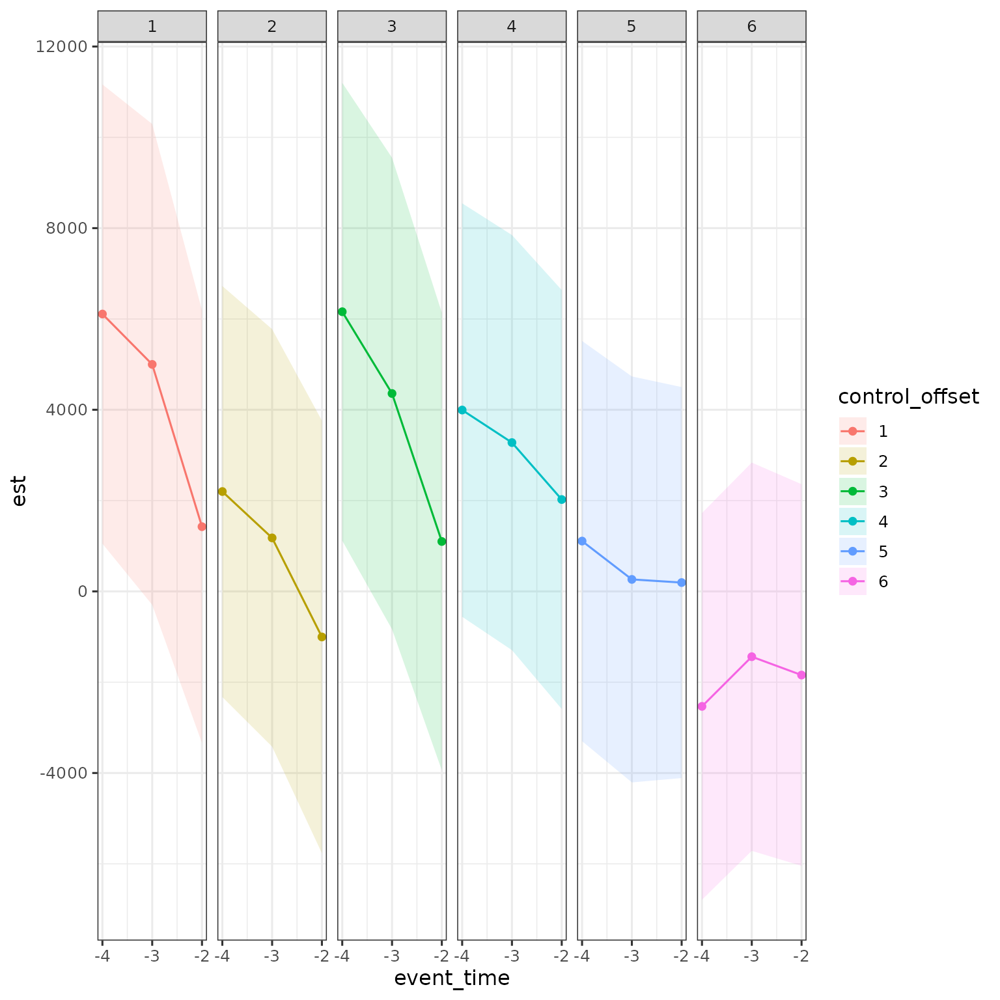
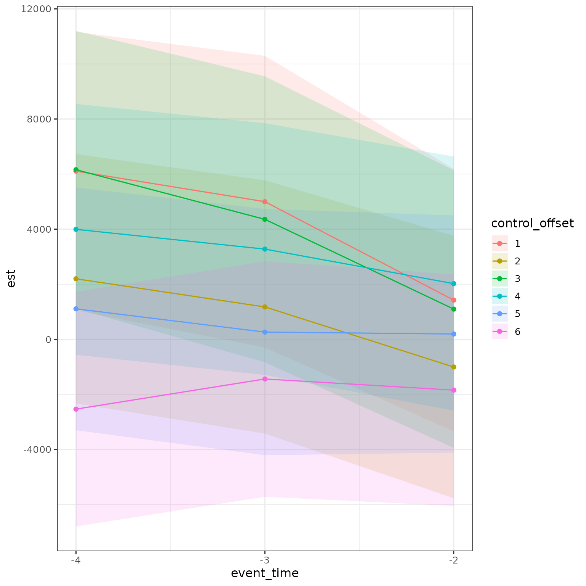
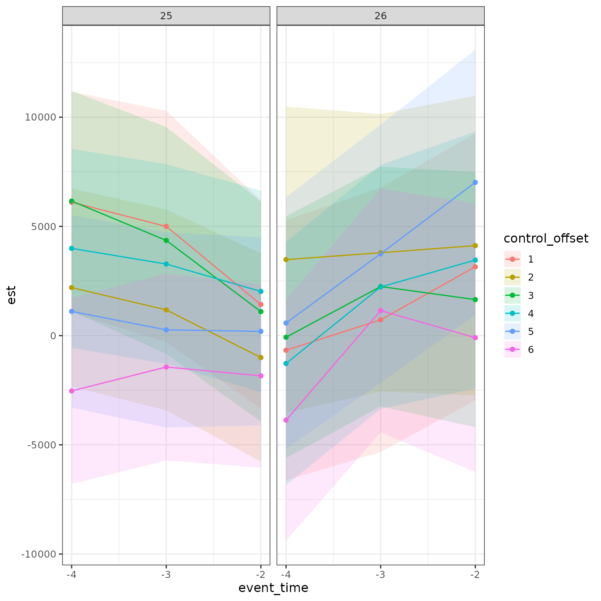
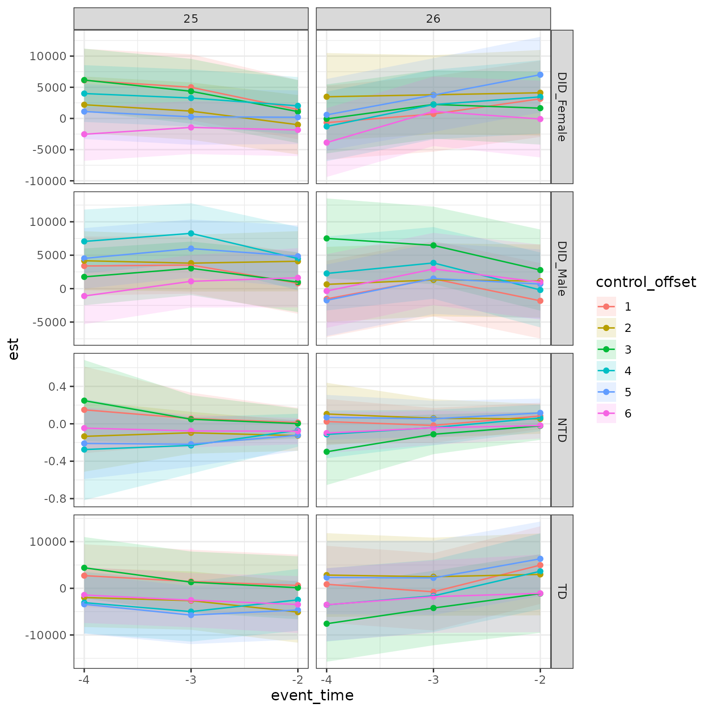

Overview
The aim of this vignette is show how to perform correct validation
tests using closest-not-yet-treated control groups using
childpen.
Simulate data
The package has a built in simulation function to draw data resembling child penalty studies.
library(childpen)
N <- 20000
data <- simulate_data(n_individuals = N)
data |> tibble()
#> # A tibble: 420,000 × 6
#> id female age D Y_inf Y
#> <int> <int> <int> <int> <dbl> <dbl>
#> 1 1 1 20 37 4455. 4455.
#> 2 1 1 21 37 7057. 7057.
#> 3 1 1 22 37 15138. 15138.
#> 4 1 1 23 37 31188. 31188.
#> 5 1 1 24 37 26199. 26199.
#> 6 1 1 25 37 45635. 45635.
#> 7 1 1 26 37 46719. 46719.
#> 8 1 1 27 37 39892. 39892.
#> 9 1 1 28 37 127141. 127141.
#> 10 1 1 29 37 109342. 109342.
#> # ℹ 419,990 more rowsThe correct validation tests
See the DID vignette (link)
for an explainer on the
comparisons in childpen. Recall that
is the treatment group,
is the target age, and
is the closest not-yet-treated control group.
Assume that when presenting results, post-treatment, you report estimates for event times . Then, for each treatment group you use 6 different control groups in post-treatment estimation. As the identification assumptions (e.g., parallel trends for DID) must hold for each point-estimate separately, this implies that it must hold within each treatment-control pair.
The above argument means that the validation tests should be done
separately by treatment-control combinations. Returning to the above
example, if you want to show results for
then you need to conduct pre-trend analysis for 6 different control
groups. This is done automatically in the childpen package,
as we show below.
For completeness, the validation tests are:
- Difference-in-differences (DID) estimates the average treatment effect (ATE) in pre-periods
- Triple differences (TD) estimates the gender gap in the ATE in pre-preiods
- Normalized triple differences (NTD) estimates the gender gap in normalized effects in pre-periods
Multiple treatment group analysis
We will now do the main heavy lifting. We run the main estimation
function, multiple_treatment_group_analysis(). Set
periods_pre to the number of pre-treatment periods for
which you want to conduct validation tests. As an example, we will
examine three periods pre-treatment. Since we set the number of periods
in the post-treatment to 5 using periods_post, this will
report validation tests separately for 6 control groups, as discussed
above.
res = multiple_treatment_group_analysis(data = data,
treatment_groups = 25:26, # which treatment groups to run in the analysis
periods_post = 5, # estimate results for post periods 0:5
periods_pre = 3, # estimate pre-trend diagnostics, set to NULL to omit from estimation
max_age = 40, # dont estimate results if age is above 40
min_age = 20, # dont estimate results if age is below 20
pre = 1, # use 1 period before treatment, can make further away if anticipation is conern
verbose = FALSE # set to TRUE to output progress (i like to time loops) set to FALSE to omit messages
) Examining results of validation tests
As a first pass, lets see the results.
res |> tibble()
#> # A tibble: 720 × 16
#> d dp a event_time estimand method est se ci_l
#> <int> <dbl> <int> <int> <chr> <chr> <dbl> <dbl> <dbl>
#> 1 25 26 25 0 APO DID_Female 72572. 3.06e+3 6.66e+4
#> 2 25 26 25 0 APO DID_Male 72728. 2.74e+3 6.74e+4
#> 3 25 26 25 0 ATE DID_Female -21041. 2.94e+3 -2.68e+4
#> 4 25 26 25 0 ATE DID_Male -2577. 2.93e+3 -8.33e+3
#> 5 25 26 25 0 theta DID_Female -0.290 3.14e-2 -3.52e-1
#> 6 25 26 25 0 theta DID_Male -0.0354 3.95e-2 -1.13e-1
#> 7 25 26 25 0 ATE TD -18463. 4.15e+3 -2.66e+4
#> 8 25 26 25 0 theta NTD -0.254 5.05e-2 -3.53e-1
#> 9 25 26 25 0 theta NTD_Alt -0.263 5.50e-2 -3.71e-1
#> 10 25 26 25 0 APO TD_Null 69995. 4.24e+3 6.17e+4
#> # ℹ 710 more rows
#> # ℹ 7 more variables: ci_h <dbl>, t <dbl>, p <dbl>, n_female_treat <int>,
#> # n_female_control <int>, n_male_treat <int>, n_male_control <int>Focusing on , lets examine pre-trends. We will start with DID of females. Generally, valid pre-trend validation tests would behave such that the confidence intervals include 0, and there is no obvious trend in the pre-period, and there is no systematic difference between control groups.
Note that in the plot below I define control_offset as
the difference between the control group
and the treatment group
.
E.g., for
and
,
i.e., the closest not-yet-treated control group at event time
,
I set control offset to 1.
Ribbons present 95% CI based on standard errors clustered at the individual level.
res |>
filter(d == 25,
a < d,
estimand == "ATE",
method == "DID_Female") |>
mutate(control_offset = dp - d,
control_offset = factor(control_offset)) |>
ggplot(aes(x = event_time, y = est, ymin = ci_l, ymax = ci_h, color = control_offset, fill = control_offset)) +
geom_ribbon(alpha = .15, color = NA) + geom_point() + geom_line() +
scale_x_continuous(breaks = -4:-2) +
facet_grid(cols = vars(control_offset))
Although this would be hard to look at, we can put all control offsets on same plot.
res |>
filter(d == 25,
a < d,
estimand == "ATE",
method == "DID_Female") |>
mutate(control_offset = dp - d,
control_offset = factor(control_offset)) |>
ggplot(aes(x = event_time, y = est, ymin = ci_l, ymax = ci_h, color = control_offset, fill = control_offset)) +
geom_ribbon(alpha = .15, color = NA) + geom_point() + geom_line() +
scale_x_continuous(breaks = -4:-2)
Can do this for multiple treatment groups at same time
res |>
filter(a < d,
estimand == "ATE",
method == "DID_Female") |>
mutate(control_offset = dp - d,
control_offset = factor(control_offset)) |>
ggplot(aes(x = event_time, y = est, ymin = ci_l, ymax = ci_h, color = control_offset, fill = control_offset)) +
geom_ribbon(alpha = .15, color = NA) + geom_point() + geom_line() +
scale_x_continuous(breaks = -4:-2) +
facet_grid(cols = vars(d))
Finally, can do this for all methods.
res |>
filter(a < d,
estimand == "ATE" & (method == "DID_Female" | method == "DID_Male" | method == "TD") |
estimand == "theta" & method == "NTD") |>
mutate(control_offset = dp - d,
control_offset = factor(control_offset)) |>
ggplot(aes(x = event_time, y = est, ymin = ci_l, ymax = ci_h, color = control_offset, fill = control_offset)) +
geom_ribbon(alpha = .15, color = NA) + geom_point() + geom_line() +
scale_x_continuous(breaks = -4:-2) +
facet_grid(cols = vars(d), rows = vars(method), scales = "free")